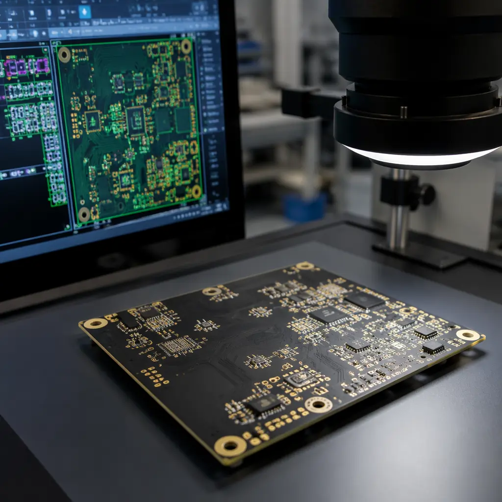
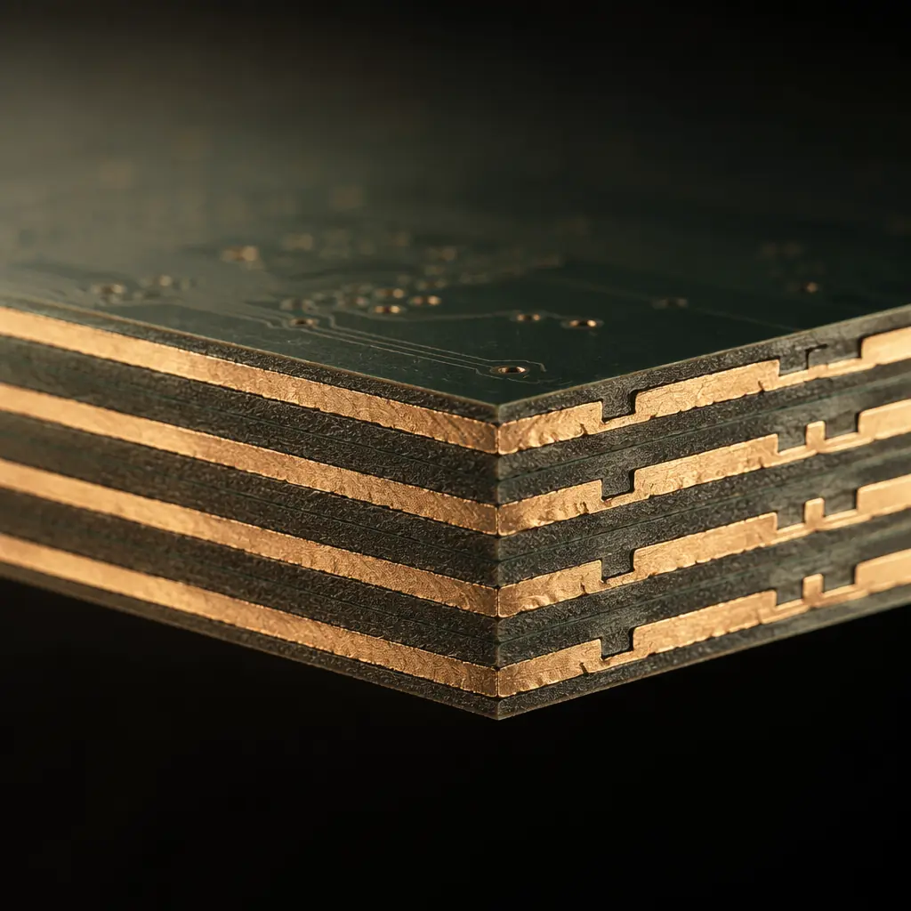

Every PCB order starts with the same question from your manufacturer: "Can you send the Gerber files?" And every week, roughly 30–40% of first-time submissions at our factory require at least one clarification cycle — a missing solder mask layer, drill file format mismatch, or undefined board outline that adds 1–3 days before production can start. This isn't a reflection on the engineer's skill. It's a reflection on how poorly documented the Gerber submission process is across the industry.
This guide covers exactly what a complete Gerber package looks like, which format to use, and the 8-point checklist our CAM engineers run against every incoming order. If your files pass all 8 checks, your boards go into production the same day — no back-and-forth, no delay.
Factory reality: Our CAM team processes approximately 120 Gerber packages per week across PCB fabrication and assembly orders. The most common rejection reason — accounting for roughly 40% of engineering queries — is missing or incorrectly defined board outline. Second place: drill files that don't match the copper layer pad positions. Both are preventable with the checks below.
What Are Gerber Files — And Why They're Non-Negotiable
Gerber files are the universal language of PCB manufacturing. Each file describes one physical layer of your board as a set of 2D vector images — copper traces on the top layer, solder mask openings, silkscreen markings, drill positions. When you send a Gerber package to a manufacturer, you're sending an unambiguous, machine-readable instruction set that drives every piece of equipment on the production floor: photoplotters for imaging, CNC drills for hole creation, AOI machines for inspection.
There is no alternative format that carries the same weight. PDFs and screenshots are for human review, not production. Native CAD files (Altium .PcbDoc, KiCad .kicad_pcb) are useful for DFM review but can't be loaded directly onto fabrication equipment — every machine reads Gerber. This is why every manufacturer, from prototype shops to high-volume facilities producing 80,000m² per month, requires Gerber as the primary data format.
The 8 Essential Gerber Layers Every Manufacturer Needs
A complete Gerber package has 8 mandatory files (for a standard 2-layer board). Each additional layer — a 4-layer board, a 6-layer board — adds 2 more copper layers. Here's the full list:
Top Copper (GTL / .GTL)
All traces, pads, and copper pours on the top side of the board. This is the file that defines what your circuit actually looks like. For a typical 2-layer board, this layer carries signal routing plus component pads. Errors here — unintended shorts, trace width violations below the manufacturer's minimum — are the most expensive to fix because they're often discovered after fabrication.
Bottom Copper (GBL / .GBL)
Mirror image of the top copper pattern, viewed from above (not mirrored in the file). For 4+ layer designs, internal layers follow the same convention: G1, G2, G3, etc. Internal layers typically carry power and ground planes with fewer signal traces.
Top Solder Mask (GTS / .GTS)
Defines where solder mask is not applied — i.e., the openings that expose copper pads for component soldering. A missing solder mask layer produces a board covered entirely in green (or your chosen color) with no exposed pads. The board is unassemblable. Mask expansion — the deliberate oversizing of openings beyond pad dimensions — is typically 0.05–0.1mm on each side and should be defined here or specified in your fabrication notes.
Bottom Solder Mask (GBS / .GBS)
Same function for the bottom side. If your board has no bottom-side components (single-sided assembly), this layer may be blank — but it must still be included as an empty file. Omitting the bottom mask layer creates ambiguity: is it intentional, or did the file get lost in export?
Top Silkscreen (GTO / .GTO)
Component outlines, reference designators (R1, C3, U2), polarity markers, and any text printed on the top side. Silkscreen clarity matters — text below 0.8mm height becomes illegible on standard white silkscreen. Our production standard ensures legibility down to 0.6mm line width for silkscreen features.
Bottom Silkscreen (GBO / .GBO)
Bottom-side markings. If your board has components on both sides, both silkscreen layers are required. Single-sided boards can omit this layer but, like the bottom mask, include an empty file to avoid ambiguity.
Board Outline (GKO / .GKO or .GML)
The single most commonly missing or incorrect layer. This file defines the physical perimeter of your PCB — where the router cuts. Without it, the manufacturer cannot panelize your board, cannot calculate material utilization, and cannot produce a finished board. The outline must be a closed polygon on its own dedicated layer. Do not draw the outline on a copper or silkscreen layer and assume the CAM engineer will extract it — they won't. They'll flag it as incomplete and send it back.
Drill File (Excellon format, .TXT or .DRL)
Technically not a Gerber file — it's Excellon format — but treated as part of the package. Contains the X/Y coordinates and diameter of every hole on the board: plated through-holes for component leads, non-plated mounting holes, and vias. A drill file with positions that don't align to pads on the copper layers is the second most common rejection reason. Our CAM team verifies drill-to-pad registration on every order before releasing to production — a check that catches roughly 15% of incoming packages.
The 8-Point Pre-Submission Checklist
Before you click "send" on that email or upload to your manufacturer's portal, run through this list. Our CAM engineers use these exact checks on every incoming order — passing them all means your package skips engineering review and goes straight to production planning.
All 8 layers present and named consistently
Count your files. A 2-layer board needs at minimum 8 files (7 Gerber + 1 drill). A 4-layer board needs 10 (9 Gerber + 1 drill). Every file must use a naming convention the manufacturer can parse — either the industry-standard extensions (.GTL, .GBL, .GTS, etc.) or a clear descriptive name with a README file explaining the mapping.
Board outline is a closed polygon on its own dedicated layer
Open the board outline file in a Gerber viewer. Zoom in on the corners — are the lines meeting? Is the shape closed? A broken outline can't define a perimeter, and the router can't follow it. Also verify the outline file contains nothing except the outline — no copper traces, no silkscreen text, no drill symbols.
Drill file positions match copper pad centers
Overlay the drill file on the top copper layer in your Gerber viewer. Every plated hole should sit centered on a copper pad. A 0.1mm offset is acceptable; a 0.5mm offset means your drill and copper layers use different origins. This happens more often than you'd think — typically when the CAD tool's drill export uses a different reference point than the Gerber export.
Minimum trace width and spacing meet manufacturer capability
Measure your smallest trace width and smallest gap between traces. Our standard capability is 3/3mil (0.075mm) trace/space — anything below that requires advanced processing and should be discussed before submission. If your design pushes these limits, note it explicitly in your fabrication drawing so the CAM team can apply the appropriate process controls.
Solder mask expansion is defined and consistent
Every pad should have a mask opening that extends beyond the copper pad edge by 0.05–0.1mm per side. Too little expansion and solder mask can bleed onto the pad surface during application. Too much and adjacent pads' mask openings merge, exposing bare substrate between them. Both conditions cause assembly defects.
Gerber format matches your manufacturer's requirements
RS-274X is the industry standard and universally accepted. Gerber X2 is newer and embeds layer type and function metadata directly in the file — it's preferred when available because it eliminates ambiguity about which file is which layer. RS-274D (the original 1980s format) is obsolete and should never be used for new designs. We accept RS-274X and Gerber X2; most manufacturers do the same.
Fabrication notes are included (PDF or text file)
A fabrication drawing doesn't need to be elaborate, but it must specify: board material (e.g., FR-4, High-Tg FR-4 for lead-free assembly), finished copper weight (1oz is standard, 2oz for power boards), surface finish (ENIG, HASL, OSP), solder mask color, silkscreen color, and any special requirements like controlled impedance or IPC Class 3 acceptance criteria. Without these specifications, the manufacturer defaults to their standard offering — which may not match your requirements. For a complete breakdown of material options, see our PCB materials selection guide covering FR-4, High-Tg, Rogers, and metal-core substrates.
Verify your files in a Gerber viewer — not your CAD tool
Your CAD tool shows you the design as you intended it. A Gerber viewer shows you exactly what the manufacturer will see. Free tools like gerbv, KiCad's Gerber Viewer, and online viewers (UCamco Reference Viewer, GerberLogix) all work. This is the single highest-ROI check: 10 minutes of Gerber review catches roughly 70% of the issues that would otherwise trigger a CAM hold. Look specifically for missing layers, misaligned drill positions, and trace-spacing violations near dense BGA areas.

RS-274X vs Gerber X2: Which Format Should You Use?
The short answer: use Gerber X2 if your CAD tool supports it. If not, RS-274X is perfectly fine and universally accepted.
The difference matters for one reason: eliminating ambiguity. An RS-274X file says "here is a set of shapes." A Gerber X2 file says "here is the top copper layer, these are its pad functions, and this is how it relates to the other layers in the package." The metadata is embedded in the file itself, not in a separate README or assumed from the file extension. For a 2-layer board with standard extensions, this doesn't change much. For an 8-layer board with blind and buried vias — where internal layer numbering can be ambiguous — Gerber X2 eliminates the most common source of layer mapping errors.
Compatibility note: Every modern CAM system (Frontline Genesis, Ucamco uFlex, CAM350) reads Gerber X2. If your manufacturer claims they only accept RS-274X, they're running outdated software — and that's a red flag for their overall process capability. All manufacturers in our supply chain, including our own CAM station, process both formats without issue.
Common Gerber File Mistakes That Delay Production
After processing over 6,000 Gerber packages annually, our CAM team has seen every possible mistake. These five account for roughly 85% of all engineering queries:
Board outline drawn on a copper or silkscreen layer
The designer draws the board perimeter on the top copper layer (or worse, the silkscreen layer) instead of exporting a dedicated outline. Result: the CAM engineer receives a set of files with no identifiable outline. They can extract it from copper — but this takes time, introduces interpretation risk, and generates an engineering hold. Always export the outline to its own dedicated mechanical layer.
Drill file and Gerber layers use different origins
Your CAD tool exports Gerber files with origin at (0,0) — the bottom-left corner of the design. But the drill export defaults to a "relative" origin at the center of the board. The drill holes land in the wrong place when the CAM system loads both. Fix: set both exports to use the same absolute origin. In KiCad, it's "Use absolute origin" under drill file generation. In Altium, it's "Reference to absolute origin" in the Gerber and NC Drill setup dialogs.
Missing internal plane layers on multilayer boards
A 4-layer board package arrives with only top and bottom copper files. The two internal layers (typically power and ground planes) are missing — usually because the designer exported "all visible layers" without realizing internal planes were hidden in the CAD view. Always export using the "plot all layers" or "all layers" option, not "visible layers."
Trace widths below the manufacturer's minimum capability
Your design passes DRC in your CAD tool because your DRC rules are set to 4/4mil, but the manufacturer you've selected can only do 5/5mil. Or — more commonly — your design pushes 3/3mil in a dense BGA breakout area but the rest of the board is 6/6mil, and you didn't flag it. Always check your manufacturer's published capability specifications before finalizing trace widths, and call out any areas that push the limits so the CAM team applies tighter process controls.
No fabrication notes or specifications
The Gerber package arrives with perfect layer data but zero accompanying documentation: no material specification, no surface finish preference, no stackup requirements, no copper weight. The manufacturer has to email you to ask — adding a day of turnaround. A single-page fabrication drawing (PDF) with these specs avoids the entire back-and-forth. At minimum, include: material type, copper weight, surface finish, solder mask color, and any controlled impedance requirements with target values.

How Huaxing PCBA Handles Your Gerber Files
When your Gerber package arrives at our facility, it goes through a structured CAM workflow designed to catch issues before they reach production — not after:
- Automated pre-check (5 minutes): Our CAM system counts files, verifies extensions, and checks for the 8 mandatory layers. Missing layers trigger an immediate flag — our engineering team contacts you the same day, not 3 days later.
- DFM analysis (15–30 minutes): The complete package runs through design-for-manufacturability software that checks trace/space against our 3/3mil minimum, verifies annular ring requirements for plated holes, and flags solder mask slivers or insufficient clearances. A DFM report is generated automatically and shared with you if issues are found. Once your design passes DFM, it's ready for full PCB assembly — from solder paste printing through functional testing.
- Impedance calculation (if required): For controlled impedance designs (±5% tolerance on our standard capability), our engineers model the stackup in Polar Si9000 using your specified target impedance and the actual material dielectric constants from our inventory. The resulting trace width adjustments are applied before panelization.
- Panelization and tooling generation: Once the design passes all checks, it's panelized for our 600×800mm maximum panel size — optimizing material utilization and adding tooling strips, fiducials, and test coupons. The final production Gerber and drill data is then released to the fabrication floor.
Turnaround commitment: For standard 2–8 layer designs with a clean Gerber package (all 8 checklist items pass), engineering review is completed within 4 hours of submission during business hours. Production begins the same day. Our average CAM-to-production release time across all orders in Q2 2026 was 3.2 hours.
The best way to ensure your order moves through this process without delays is simple: run the 8-point checklist before sending. It takes 10 minutes and eliminates the #1 cause of production delays — incomplete or incorrectly formatted Gerber data. If you're unsure about any aspect of your Gerber export, our engineering team provides a free DFM review before you commit to an order. Send your files and we'll tell you exactly what needs attention — no obligation, no pressure.